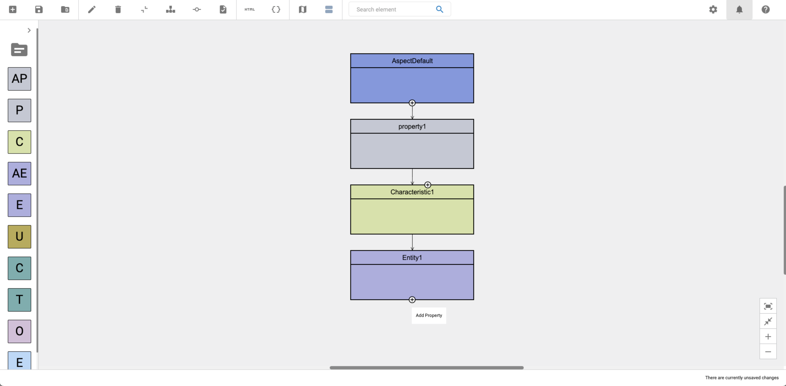

Edit models
An Aspect Model consists of different SAMM elements: one Aspect and several Properties, Characteristics, Entities, Units, Constraints, Traits, Operations, and Events.
When using the Aspect Model Editor, while creating a new model an Aspect element is created by default. All other elements can then be added. Every element created in the editor can be modified.
| Elements that are references from models in another namespace, can only be edited when working in the namespace they belong to. |
The naming conventions for Aspect Model elements are defined in the Naming Rules (SAMM 2.1.0). The Aspect Model Editor guides you to follow all these SAMM naming conventions for your Aspect Models.
Work with the Workspace sidebar

-
To open a list of all the namespaces and files that are currently available, click the Workspace icon .
For more information, see Namespaces and external references.
-
The Workspace sidebar also offers all types of elements to drag and drop into your Aspect Model. From here you can add new Properties, Characteristics, Entities, Units, Constraints, Traits, Operations, and Events by dragging an element from the sidebar to the diagram area.
Add elements
There are three different ways to add an element:
-
Use the Add icon
-
Use drag-and-drop from the Workspace sidebar
-
Use drag-and-drop from the Panel
Use the Add icon
To add and connect the next logical element, click the Add icon at the bottom edge of any existing element.
-
After an Aspect a default Property will be added.
-
After a Property a default Characteristic will be added.
-
After a Characteristic a default Entity will be added.
-
After an Entity a default Property will be added.

| For Characteristics, you will also find an Add icon on the top to insert a Constraint between the Property and the Characteristic. This also creates a Trait that is connected to the property and constraint. |
Use drag-and-drop from the Workspace sidebar
Drag and drop one of the available elements from the Workspace sidebar. You have the option to create new elements or to use already existing elements from other namespaces.
| In order to prevent formatting issues, it is a best practice to always connect a new element with another element directly after adding it. See also known issues. |
Find elements
Use the search bar in the toolbar to find elements. By selecting an element it will be highlighted and centered in the diagram area.

Use the following advanced search possibilities for more specific search results:
=position |
SAMM elements that are named "position" |
*position |
SAMM elements that contain "position" in their name |
position$ |
SAMM elements where the name ends with "position" |
Connect elements
In some situations you might want to connect elements manually, e.g., when you want to reuse a Characteristic and connect a second Property to it.
Find details on the various options on how to create the connection at Connect elements.